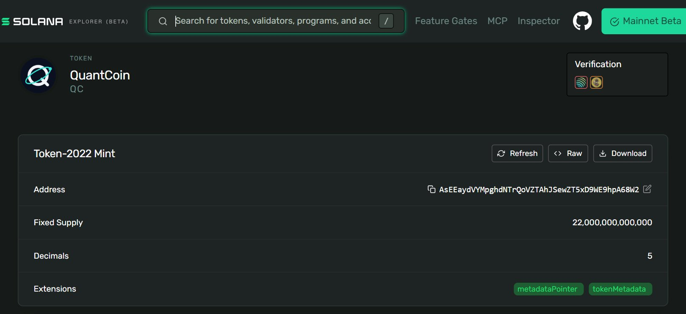
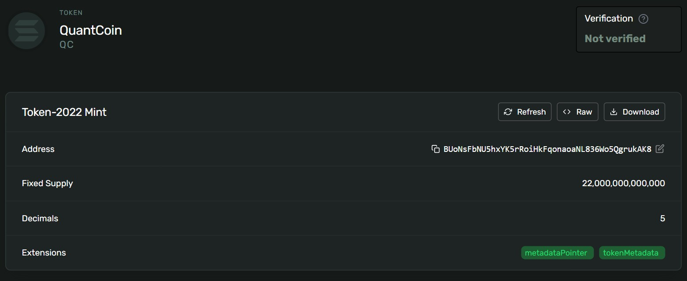
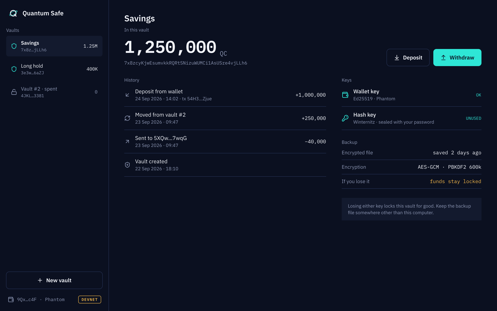
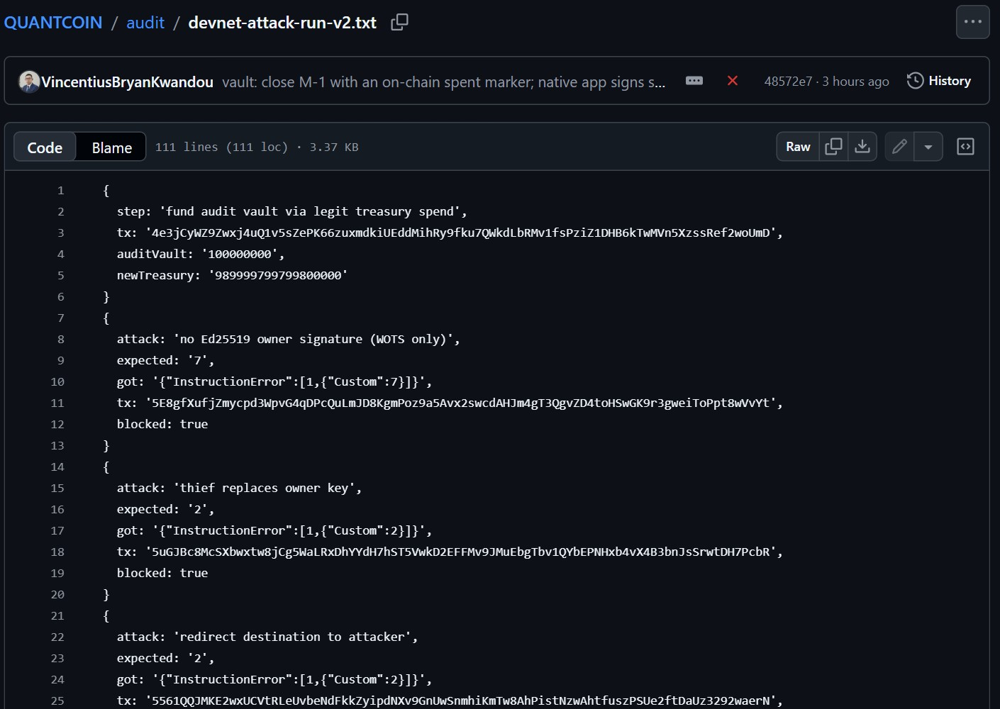
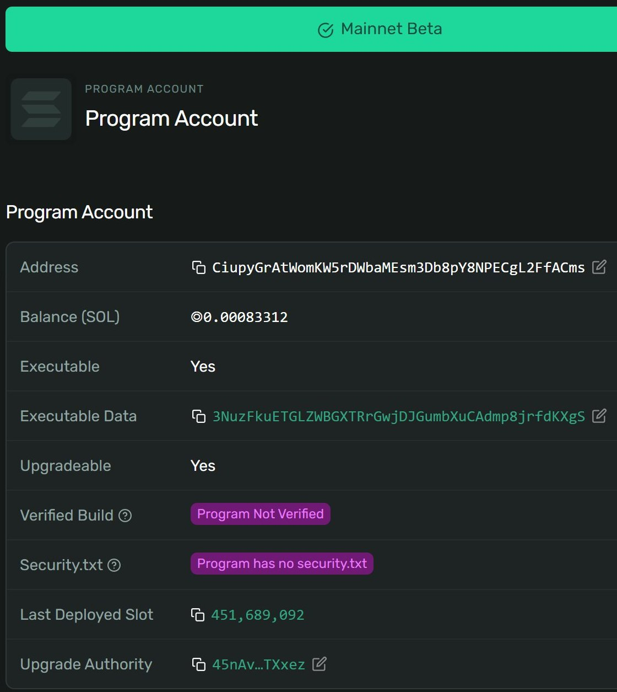

<title>QuantCoin</title>
<style>:root{--accent:#0D8A80;--brand:#0B1020}</style>
<svg id="brandmark" hidden viewBox="0 0 512 512"><circle cx="256" cy="256" r="256" fill="#0B1020"/><circle cx="256" cy="256" r="130" fill="none" stroke="#F2F4FA" stroke-width="42"/><path d="M310 310 L392 392" stroke="#F2F4FA" stroke-width="42" stroke-linecap="round"/><ellipse cx="256" cy="256" rx="200" ry="70" fill="none" stroke="#2EE6D6" stroke-width="16" transform="rotate(-30 256 256)"/><circle cx="430" cy="160" r="24" fill="#2EE6D6"/></svg>
<section class="brand media">
  <div class="fill rv">
    <svg width="96" height="96" viewBox="0 0 512 512" style="margin:0 0 36px"><circle cx="256" cy="256" r="256" fill="#0B1020"/><circle cx="256" cy="256" r="130" fill="none" stroke="#F2F4FA" stroke-width="42"/><path d="M310 310 L392 392" stroke="#F2F4FA" stroke-width="42" stroke-linecap="round"/><ellipse cx="256" cy="256" rx="200" ry="70" fill="none" stroke="#2EE6D6" stroke-width="16" transform="rotate(-30 256 256)"/><circle cx="430" cy="160" r="24" fill="#2EE6D6"/></svg>
    <h1>QuantCoin keeps long-held Solana tokens safe from a quantum computer</h1>
    <p class="lede">A Token-2022 token with a hybrid vault · Bryan Kwandou · live on mainnet, pre-audit</p>
  </div>
  <figure class="pic screen"><figcaption class="credit">Solana Explorer, Mainnet Beta, 30 Sep 2026: mint AsEEay…hpA68W2</figcaption></figure>
  <aside class="notes">QuantCoin is a Solana token whose treasury, team and reserve balances sit in a vault that needs two signatures to open. One is the normal Ed25519 signature. The other is a hash-based signature that a quantum computer cannot forge. It is live on mainnet, the upgrade key sits with a two-of-three multisig, and it has not had an external audit yet.</aside>
</section>
<section>
  <div class="eyebrow">Problem</div>
  <h2>Effectively all SOL sits behind keys a quantum computer can break</h2>
  <div class="row"><div class="c8"><div class="hbars">
    <span class="l">Bitcoin</span><div class="t" style="--b:25;--d:0"><i></i></div><span class="v">~25%</span>
    <span class="l">Ethereum</span><div class="t" style="--b:65;--d:1"><i></i></div><span class="v">65%+</span>
    <span class="l">Solana</span><div class="t hi" style="--b:100;--d:2"><i></i></div><span class="v">all</span>
    <span></span><div class="axis"><span>0</span><span>share of supply with its public key exposed</span><span>100%</span></div><span></span>
  </div></div><div class="c4"><p>On Solana the address is the public key.</p></div></div>
  <p class="source">Source: Citi Institute, Quantum Threat, January 2026 [E1] [E2]</p>
  <aside class="notes">These are Citi's numbers, not mine. Bitcoin hides most keys behind a hash until you spend. On Solana your address is your Ed25519 public key, so every balance has its key on-chain already. A treasury meant to sit for twenty years can be read today and drained the day the machine exists.</aside>
</section>
<section>
  <div class="eyebrow">How close</div>
  <h2>Experts put a code-breaking machine past even odds within 15 years</h2>
  <div class="hbars" style="margin-top:44px">
    <span class="l">Anza, within 5 years</span><div class="t" style="--a:3;--b:5;--d:0"><i></i></div><span class="v">3–5%</span>
    <span class="l">Citi, by 2034</span><div class="t" style="--a:19;--b:34;--d:1"><i></i></div><span class="v">19–34%</span>
    <span class="l">GRI experts, 10 years</span><div class="t" style="--a:28;--b:49;--d:2"><i></i></div><span class="v">28–49%</span>
    <span class="l">GRI experts, 15 years</span><div class="t hi" style="--a:51;--b:70;--d:3"><i></i></div><span class="v">51–70%</span>
    <span class="l">Citi, by 2044</span><div class="t hi" style="--a:60;--b:82;--d:4"><i></i></div><span class="v">60–82%</span>
    <span></span><div class="axis"><span>0%</span><span>estimated probability, low to high</span><span>100%</span></div><span></span>
  </div>
  <p class="source">Source: Anza, April 2026 [T4]; Citi Institute, January 2026 [T3]; Global Risk Institute, 2025 report [T1]</p>
  <aside class="notes">Even the most cautious estimate, Anza's, is not zero. Google also cut the qubits needed to break these keys about twentyfold this year [R2]. A vesting schedule signed today runs inside these windows.</aside>
</section>
<section>
  <div class="eyebrow">Deadline</div>
  <h2>Regulators want quantum-vulnerable signatures gone by 2035</h2>
  <div class="tl rv">
    <div><svg class="ico"><use href="#i-doc"/></svg><b>2024</b><span>NIST publishes FIPS 205, hash-based signatures [G3]</span></div>
    <div><svg class="ico"><use href="#i-search"/></svg><b>2028</b><span>UK: discovery and migration plan done [G4]</span></div>
    <div><svg class="ico"><use href="#i-alert"/></svg><b>2030</b><span>NIST deprecates 112-bit ECDSA and RSA [G1]</span></div>
    <div><svg class="ico"><use href="#i-shield"/></svg><b>2031</b><span>UK: priority systems migrated [G4]</span></div>
    <div class="hi"><svg class="ico"><use href="#i-lock"/></svg><b>2035</b><span>NIST disallows EdDSA, Solana's signature family [G1]</span></div>
  </div>
  <p class="source">Source: NIST IR 8547, November 2024 [G1]; NIST, August 2024 [G3]; UK NCSC, March 2025 [G4]</p>
  <aside class="notes">The US and UK both land on 2035. The hash-based signature QuantCoin uses already has a NIST standard behind it since 2024, so the conservative choice is also the standard one. Custodians will have to answer for this long before 2035.</aside>
</section>
<section>
  <div class="eyebrow">Readiness</div>
  <h2>Most security teams worry, <em>almost none</em> have a plan</h2>
  <div class="split">
    <div class="donut lo" style="--p:62"><div><b>62%</b><span>worried about quantum</span></div></div>
    <div class="donut" style="--p:5"><div><b>5%</b><span>have a defined strategy</span></div></div>
    <div><p>ISACA poll of more than 2,600 security professionals.</p><p class="lede">That gap is who we sell to.</p></div>
  </div>
  <p class="source">Source: ISACA Quantum Pulse Poll, April 2025 [S1]</p>
  <aside class="notes">Sixty-two percent are worried, five percent have a strategy [S1]. Nobody is going to pull us in; we will have to sell. The gap between worry and action is the opening.</aside>
</section>
<section>
  <div class="eyebrow">Product</div>
  <h2>A vault opens only when both signatures check out</h2>
  <svg viewBox="0 0 1152 330" style="width:100%;height:auto;margin-top:auto;margin-bottom:auto" role="img" aria-label="Two checks, four outcomes: the vault pays out only when both the Ed25519 and the Winternitz signature pass; a quantum attacker or a Winternitz bug alone is refused">
    <g font-family="Inter,sans-serif" font-size="22" fill="#15161A">
      <text x="290" y="30" font-weight="600">Winternitz passes</text><text x="728" y="30" font-weight="600">Winternitz fails</text>
      <text x="0" y="118" font-weight="600">Ed25519 passes</text><text x="0" y="256" font-weight="600">Ed25519 fails</text>
      <rect x="290" y="56" width="420" height="120" rx="14" fill="#0D8A80"/>
      <text x="318" y="108" font-size="30" font-weight="700" fill="#fff">Spend</text>
      <text x="318" y="148" fill="#fff">the owner, holding both keys</text>
      <rect x="728" y="56" width="420" height="120" rx="14" fill="#EDEBE6"/>
      <text x="756" y="108" font-size="30" font-weight="700" fill="#15161A">Refused</text>
      <text x="756" y="148" fill="#5F6570">a quantum attacker</text>
      <rect x="290" y="194" width="420" height="120" rx="14" fill="#EDEBE6"/>
      <text x="318" y="246" font-size="30" font-weight="700" fill="#15161A">Refused</text>
      <text x="318" y="286" fill="#5F6570">a Winternitz bug</text>
      <rect x="728" y="194" width="420" height="120" rx="14" fill="#EDEBE6"/>
      <text x="756" y="246" font-size="30" font-weight="700" fill="#15161A">Refused</text>
      
    </g>
  </svg>
  <p class="lede" style="margin-top:0">An attacker has to break both.</p>
  <aside class="notes">An attacker has to break both. Before quantum computers exist, Ed25519 also covers any bug in the newer Winternitz code. After, the hash half still holds. Every spend empties the vault, so no one-time key signs twice. Everyday transfers stay plain Token-2022, so wallets need nothing new.</aside>
</section>
<section class="media">
  <div class="eyebrow">Demo</div>
  <h2>One devnet spend moved 22 trillion QC between vaults</h2>
  <div class="frame mono specimen" style="margin:auto 0;font-size:19px">spend Np26Uxfw…<br>sent       1,000,000 QC<br>refunded   21,999,999,000,000 QC<br>old vault  closed<br>compute    610,076 of 1.4M CU</div>
  <figure class="pic screen"><figcaption class="credit">Solana Explorer, devnet, 29 Sep 2026: mint BUoNsF…rukAK8</figcaption></figure>
  <p class="source">Source: QuantCoin README, devnet run 2026-09-23; Solana docs, compute limit [X1]</p>
  <aside class="notes">This is the whole supply moving. One million out to a destination, the rest into the owner's next vault, and the old vault closed. It used about six hundred ten thousand compute units, well under the one point four million limit per transaction. The TypeScript client and the Rust program agree byte for byte.</aside>
</section>
<section>
  <div class="eyebrow">App design</div>
  <h2>Holders see one balance and two keys</h2>
  <div class="row"><div class="c8"><p class="cap">Design mockup, not yet built. The vault program and CLI client run on mainnet and devnet today.</p></div>
  <div class="c4"><p>Losing either key locks the vault, so the app puts the backup up front.</p></div></div>
  <aside class="notes">This is the design for the holder app, and I want to be clear it is a design, not a shipped app. What runs today is the program and the command-line client. The screen shows the two keys and the encrypted backup, because a lost hash key means locked funds.</aside>
</section>
<section class="media">
  <div class="eyebrow">Proof</div>
  <h2><em>Thirteen</em> attacks on devnet, all thirteen refused</h2>
  <div class="kpis" style="grid-auto-flow:row;gap:28px;margin:auto 0">
    <div class="hi"><b>13 / 13</b><span>live attacks blocked: stolen owner key, redirected funds, flipped signature bit, replay</span></div>
    <div><b>7,464 B</b><span>program, one instruction, Pinocchio</span></div>
  </div>
  <p class="source">Source: QuantCoin audit/devnet-attack-run-v2.txt and program build, commit 48572e7, 2026-09-29</p>
  <figure class="pic screen"><figcaption class="credit">github.com/bryankwandou/QUANTCOIN, audit/devnet-attack-run-v2.txt, commit 48572e7</figcaption></figure>
  <aside class="notes">Each line in that file is a real devnet transaction: a missing owner signature, a thief swapping the owner key, funds redirected to an attacker, the amount raised after signing, one flipped signature bit, and a replay of a spend that already went through. All thirteen failed with the error code we expected. The address commits to both keys and the signed message binds every account, so a relayer cannot redirect anything.</aside>
</section>
<section>
  <div class="eyebrow">Competition</div>
  <h2>Solana's own plan protects new wallets, not old balances</h2>
  <div class="quad rv" style="margin-top:40px">
    <span class="ax y">↑ Protects balances that already exist</span><span class="ax x">Works today, no protocol change →</span>
    <span class="dot" style="left:6%;bottom:22%">Solana Foundation plan: new wallets, if quantum turns credible [L3]</span>
    <span class="dot" style="left:56%;bottom:52%">Blueshift vault: SOL only [L1]</span>
    <span class="dot hi" style="left:56%;bottom:86%">QuantCoin: any Token-2022 balance, live now</span>
  </div>
  <p class="source">Source: Solana Foundation, April 2026 [L3]; Blueshift on GitHub [L1]</p>
  <aside class="notes">The Foundation says quantum is still years away and plans Falcon for new wallets later. That is fair. But its plan starts when the threat is credible, and a treasury cannot move in a day. Blueshift proved the idea for SOL. QuantCoin extends it to tokens.</aside>
</section>
<section>
  <div class="eyebrow">Go-to-market</div>
  <h2>The first users are treasuries that plan to hold for years</h2>
  <div class="kpis rv">
    <div class="hi"><b>$1.3B</b><span>in Solana DAO treasuries, 2022, the last public count [L6]</span></div>
    <div><b>0</b><span>treasuries signed; team vesting goes first</span></div>
  </div>
  <div class="gantt" style="--max:10;--ticks:5">
    <div class="end" style="--a:0;--b:9"><b>Ed25519 wallet<small>Solana today</small></b><i><em>NIST disallows, 2035</em></i></div>
    <div class="hi end" style="--a:0;--b:10"><b>QuantCoin vault<small>+ hash-based key</small></b><i><em>no NIST end date</em></i></div>
    <div class="ax"><b></b><p><span>2026</span><span>2028</span><span>2030</span><span>2032</span><span>2034</span><span>2036</span></p></div>
  </div>
  <p class="source">Source: Decrypt citing DeepDAO, March 2022 [L6]; NIST IR 8547 [G1]</p>
  <aside class="notes">The figure is old and secondhand, and I say so. The point is that long-held treasuries exist. I have not signed any of them yet. There are no users today; the signal so far is engineering.</aside>
</section>
<section>
  <div class="eyebrow">Team</div>
  <h2>One builder wrote the program, the client and the audit trail</h2>
  <div class="gantt" style="--max:8;--ticks:4">
    <div style="--a:0;--b:7"><b>Vault program<small>Pinocchio, Rust</small></b><i></i></div>
    <div style="--a:0;--b:8"><b>WOTS client<small>TypeScript signer</small></b><i></i></div>
    <div style="--a:0;--b:8"><b>Internal audit<small>findings F1 to F5, public</small></b><i></i></div>
    <div class="hi end" style="--a:7;--b:8"><b>Mainnet<small>2-of-3 multisig</small></b><i><em>30 Sep</em></i></div>
    <div class="ax"><b></b><p><span>23 Sep</span><span>25</span><span>27</span><span>29</span><span>1 Oct</span></p></div>
  </div>
  <p class="lede" style="margin-top:12px">Every commit since the rebuild: Bryan Kwandou.</p>
  <p class="source">Source: QUANTCOIN git history, first and last commit per folder, 23–30 Sep 2026</p>
  <aside class="notes">It is one person today. The next hire is a reviewer who did not write the code. That is the main risk, and the reason the external audit comes before anything else.</aside>
</section>
<section class="media">
  <div class="eyebrow">Ask</div>
  <h2>Fund an external audit, then lock the program for good</h2>
  <table class="t" style="font-size:24px;margin:auto 0">
    <tr><th>When</th><th>The upgrade key</th></tr>
    <tr><td>Today</td><td>Live on mainnet, held by a 2-of-3 Squads multisig</td></tr>
    <tr class="hi"><td>Your funding</td><td>An outside audit of the 7,464-byte program</td></tr>
    <tr><td>After audit</td><td>Made final: nobody can change the program</td></tr>
  </table>
  <p class="source">Source: Solana Explorer, Mainnet Beta, 30 Sep 2026; team plan</p>
  <figure class="pic screen"><figcaption class="credit">Solana Explorer, Mainnet Beta, 30 Sep 2026: program CiupyG…FACms, upgrade authority 45nAv…TXxez</figcaption></figure>
  <aside class="notes">The ask is simple. The program is already on mainnet, but its upgrade key still exists, held by a two-of-three multisig. The ask is an outside audit of seven and a half kilobytes, then the upgrade key thrown away, because any Ed25519 key left behind would undo the whole point.</aside>
</section>
